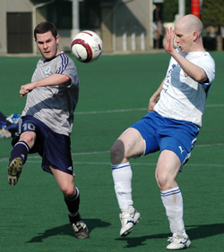
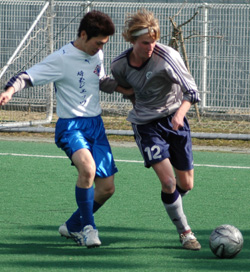
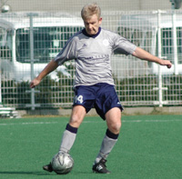

|
Hachioji Park Suday 9th March,
The prospect of an hour and a half journey from Yokohama proved too much for some of our teammates but the bare 11 hardy souls who braved the trip made it worthwhile, taking home the 3 points that will keep YCAC in the top flight next year.
Seems a bit soft to talk about relegation after the 3 points shot the club up to 4th spot but without a now perfect record against the bottom 2 teams YCAC would have been deep in the mire with them.
The definition of inconsistency? YCACs only victories in TML5 have been against the bottom 2 teams and the top 2 teams. None at all against anybody else.
Too bad that 2 of the Jets, Embassy and Vags seem likely to have to go down. All are good clubs able to field full squads (in matching kit-always key) and provide competitive opposition week in week out. Teams relegated in past years seem to have been much weaker, regularly thrashed and unable to fulfil fixtures. A measure of the growing competitiveness of the TML I suppose
The Jets would be especially missed, i suppose, if only for their ability to get a hold of Hachioji Park. It looks slightly dated compared with ASIJ, it must be said, but still a pleasure compared with most. The technology for All Weather Surfaces is continuously improving so it can only be expected that the YCAC pitch that, barring a monumental SNAFU, is expected to be installed over the summer, will be the best yet. One should remind ones readers that one was saying exactly the same 'kin thing this time last 'kin year. SNAFU can so often be the middle name for Non Profit Organizations run by their members
As was the case last week at ASIJ, the surface was very much to the liking of the Visitors, thank you very much. Early thrusts by the Jets through the centre and down the left were not converted. The normally prolific Nate had a couple of chances in the 1st 20 minutes but had left his shooting boots at home and failed to trouble either the YCAC Keeper or the Scorers.
Kitajima the YCAC centre back, totally oblivious to the (not very) subtle criticism aimed at him in last weeks match report, again set up shop in the opposition area and refused to come home. This time he got away with it by driving a loose ball low past the diving Jets Keeper for his 1st goal of the season and YCAC led 1-0. A lead held until HT.
The Jets really failed to appear for the 2nd half, I cant think of another way to put it. The YCAC masterstroke was to put 4 men across the midfield with the tireless Joe Takeda sweeping up behind them. Somewhat of a risk given the suspect mobility of the 3 defenders on a big park but it meant that a) the game was played in midfield where YCAC has its best and fittest players and b) The Jets best players, at least in the Writers opinion, Nate and Loren were completely starved of the ball
It didnt appear that the Jets would score ever again given their 2nd half display and both sides seemed to know it. YCAC were able to play the ball around almost with impunity as the home side tired and created a number of good chances thanks to the strong running of Hide Yoshioka and Matt Wallace.
Mikey Taw was the chief beneficiary, expertly converting a couple of close range chances to record, at just shy of 16 1/2, his 1st goals in the TML top flight.
A 3-0 defeat was not what the Jets had been looking for. Home advantage against an inconsistent YCAC team, noted for being poor travellers and with the bare 11? I'm thinking that not many better opportunities to take 3 points will present themselves as the season winds down. Still, the future looks bright for The Jets with their healthy youth system. How many babies and toddlers were on the sideline? "Enough to promise a hell of a 1st team in 16 or 17 years time" remarked Nate as he waited forlornly on the halfway line with more chance of a getting a double decker bus than a decent pass
Hats off to Jorge for a relaxed and efficient job with the whistle and to the home side for providing both, scrupulously fair, linesmen
Report by Steve Taw
|